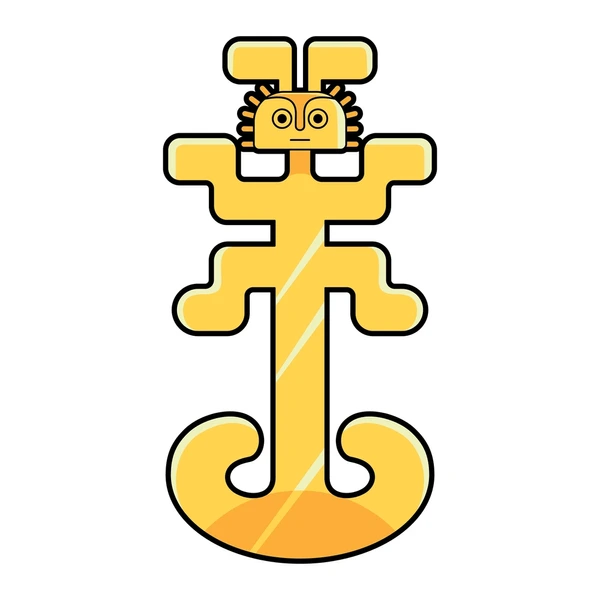
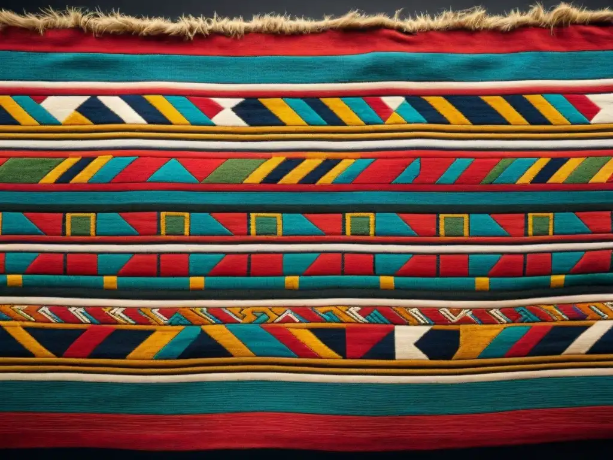
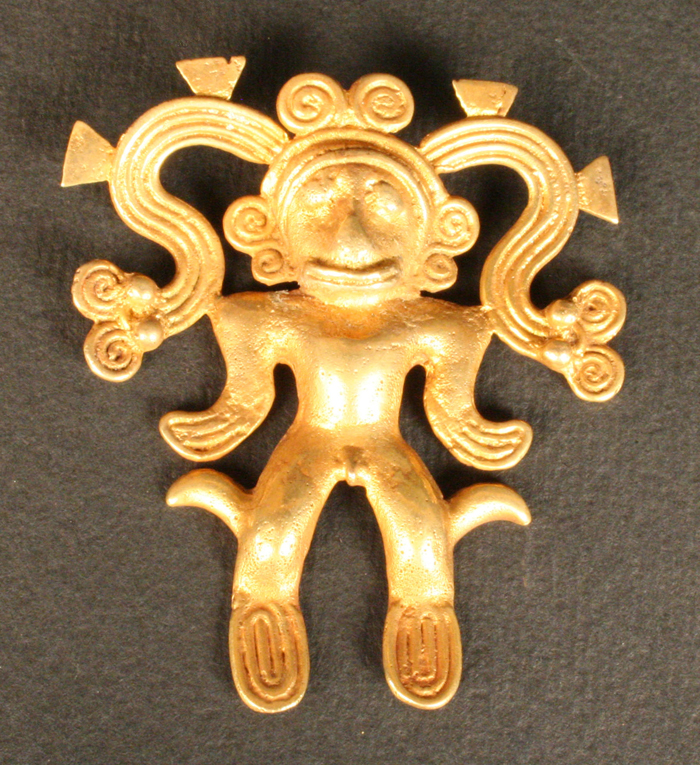

Mayas
La civilización maya se desarrolló en Mesoamérica, principalmente en lo que hoy es México, Guatemala, Belice y Honduras. Destacaron en matemáticas, astronomía y escritura jeroglífica.

Las civilizaciones precolombinas, como los mayas, aztecas e incas, desarrollaron arquitectura monumental, sistemas agrícolas avanzados y una rica tradición artística antes de la llegada de los europeos.

La civilización maya se desarrolló en Mesoamérica, principalmente en lo que hoy es México, Guatemala, Belice y Honduras. Destacaron en matemáticas, astronomía y escritura jeroglífica.
Los aztecas fundaron la gran ciudad de Tenochtitlán. Su sociedad era altamente organizada y su religión incluía complejos rituales y ceremonias.
El Imperio Inca se extendió a lo largo de los Andes. Desarrollaron una red de caminos impresionante y técnicas agrícolas como las terrazas.
El arte precolombino incluye esculturas, cerámica, textiles y arquitectura. Cada cultura tenía estilos únicos que reflejaban su cosmovisión y organización social.

Las civilizaciones precolombinas desarrollaron técnicas agrícolas innovadoras como las chinampas (islas artificiales) y los sistemas de riego. Cultivaban maíz, papa, cacao y otros alimentos fundamentales.
Hoy en día, muchas tradiciones, idiomas y conocimientos de estas culturas siguen vivos en comunidades indígenas de América Latina. Su legado influye en la identidad cultural del continente.
La civilización maya se desarrolló en Mesoamérica y destacó en matemáticas, astronomía y escritura.
Fundaron Tenochtitlán y tenían una sociedad altamente organizada con rituales complejos.
Se extendieron por los Andes y desarrollaron caminos y técnicas agrícolas avanzadas.